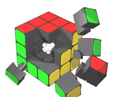
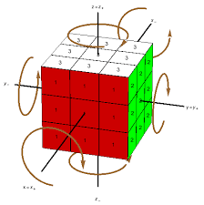
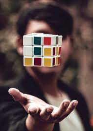

Acerca de cubos rubik
A mediados de la década de 1970, Ernő Rubik trabajaba en el Departamento de Diseño de Interiores en la Academia de Artes y Trabajos Manuales Aplicados en Budapest. 15 Aunque generalmente se dice que el cubo fue construido como herramienta escolar para ayudar a sus estudiantes a entender objetos tridimensionales, su propósito real era resolver el problema estructural que lograra mover las partes independientemente sin que el mecanismo entero se desmoronara. Rubik no se dio cuenta de que había creado un rompecabezas hasta la primera vez que mezcló su nuevo cubo e intentó volverlo a la posición original.
Mecanismo
Un cubo de Rubik estándar mide desarmado 5,7 cm en cada lado, aunque existen variaciones. El rompecabezas consta de 26 piezas o cubos pequeños. Cada una incluye una extensión interna oculta que se entrelaza con los otros cubos, mientras les permite moverse a diferentes posiciones. Sin embargo, las piezas centrales de cada una de las seis caras son simplemente un cuadrado fijado al mecanismo principal. Esto provee la estructura para que las otras piezas encajen y giren alrededor. De este modo hay 21 piezas: una pieza central consistente de tres ejes que sostienen los seis centros cuadrados en su lugar pero dejando que giren y 20 piezas de plástico que encajen en él para formar el rompecabezas montado.
Matemáticas en cubos
El cubo de Rubik original (3x3x3) tiene ocho vértices y doce aristas osea un cubo normal. Hay 8! (40 320) formas de combinar los vértices del cubo. Siete de estas pueden orientarse independientemente y la orientación de la octava dependerá de las siete anteriores, dando 3^7 (2187) posibilidades. A su vez hay 12!/2 (239 500 800) formas de disponer las aristas, dado que una paridad de las esquinas implica asimismo una paridad de las aristas. Once aristas pueden ser volteadas independientemente y la rotación de la duodécima dependerá de las anteriores, dando 2^11 (2048) posibilidades. En total el número de permutaciones posibles en el cubo de Rubik es de: (8!⋅12!⋅(3^7).(2^11))/2 = 43 252 003 274 489 856 000
En la cultura popular
El cubo de Rubik fascinó a gente de todo el mundo y se volvió uno de los juegos más populares de América a mediados de la década de 1970. En solo siete años las ventas mundiales habían superado los treinta millones de unidades; un conocido comprador en el emporio de juguetes de FAO Scwarz en Nueva York señaló que se había convertido en "el juguete más solicitado". Algunos incluso sostenían que podía llevar a un comportamiento obsesivo.66 Ediciones piratas aparecieron en Taiwán, Hong Kong y algunas ciudades estadounidenses. El cubo dio lugar a una serie de televisión y trabajos literarios.66 Hasta enero de 2009, 350 millones de cubos han sido vendidos en todo el mundo, haciéndolo el juego de rompecabezas más vendido del mundo. El cubo se ganó un lugar como exhibición permanente en el Museo de Arte Moderno de Nueva York e ingresó en el Oxford English Dictionary luego de solo dos años.7 Mantiene un dedicado seguimiento, con cerca de 40 000 entradas en YouTube que ofrecen tutoriales y videos de soluciones.
